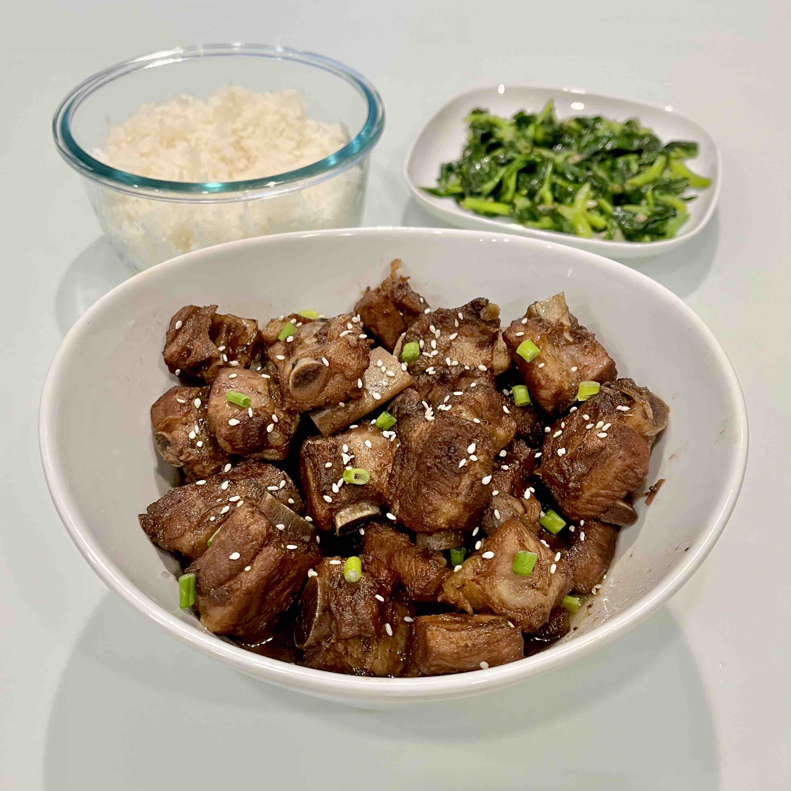

Sweet and Sour Ribs

Description
A popular dish in Chinese cuisine that features tender, juicy ribs coated with a tangy sweet-sour sauce. Recipe taken from Red House Spice.
Ingredients
- 700 g baby ribs
- 1 tbsp oil
- 10 whole garlic cloves, peeled
- thumb-sized piece of ginger
- 2 stalks scallion, cut in half lengthwise
- 70 g rock sugar (or 5 tbsp white sugar)
- 4 tbsp black rice vinegar, divided into 3 + 1 tbsp
- 1 tbsp light soy sauce
- 1 tsp dark soy sauce
- pinch of salt
- chopped scallions and sesame seeds, for garnish
Steps
- Put pork ribs into a large cookware. Fill it with plenty of room temperature water. Bring it to a boil then leave to simmer. Skim off the foam appearing on the surface with a spoon. After about 3 minutes, drain the ribs.
- Pour oil into a clean wok (or deep pan, pot) then add the drained ribs, garlic, ginger, and scallion. Stir fry over medium heat until the ribs become a little golden on the surface.
- Add sugar, 3 tbsp black rice vinegar, light soy sauce, dark soy sauce and salt. Top up with hot water enough to just level with the ribs.
- Bring to a full boil then turn the heat to low. Cover and leave to simmer for about 50 minutes, topping up the water as necessary to make sure it doesn’t burn.
- When the time is up, uncover and pick out the ginger. Add the remaining 1 tablespoon of black rice vinegar. Turn the heat up to high to boil down the liquid.
- Stir from time to time until the liquid becomes just thick enough to coat the ribs. Remove from the heat immediately. Be attentive not to overcook as it’ll cause the sugar to burn. The sauce will thicken as it cools, so it’s ok if it’s not at the right consistency when you take it off the heat.
- Transfer the ribs to a serving bowl/plate. Sprinkle sesame seeds and scallions over to garnish, and enjoy!
Return to home page